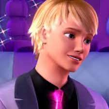
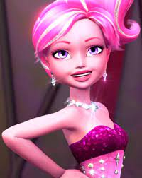
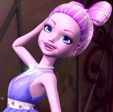
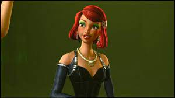
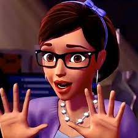
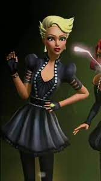

tia da barbie,onde estava com serios problemas em sua loja de roupa.
Barbie
Em um conto de fadas fashion, Barbie viaja a Paris para salvar o ateliê de moda da sua tia, que está prestes a ser fechado.
Ken

Criado em 1961, dois anos após o lançamento de Barbie, Ken se tornou um dos principais personagens do universo da boneca e hoje, 11 de março, ele completa 60 anos de história.
Raquelle
Barbie tem mais de 22 anos de idade, como mencionado no primeiro episódio. Ryan e Raquelle têm a mesma idade, como eles são gêmeos, e Ken, Teresa, Nikki, Midge e Summer estão em torno da mesma idade que o outro.
Shyne

Shyne é a fada do glamour,onde ela passa há glamour e não a nada que o para nem mesmo duas plagiadoras malvadas
que as querem sequestrar para dar glamour,brilho,e glitter a suas roupas,liderando
as suas irmãs ela sabe que pode tudo.

Shimmer é a fada do glitter,onde e irmã de shyne e gimmer,onde sempre aparece dando
destaque,levesa e muito brilho as roupas.

Delphine é uma das antagonistas do filme, sua parceira é a Jacqueline.
Gimmer é a fada do brilho, onde mostra ter uma grande dificuldade de controlar sua magia em quase
todo o filme mas no final acaba se destacando.


Jacqueline é a antagonista principal do filme. Ela era uma designer de moda, junto com Delphine.
onde assistir
ocê pode assistir "Barbie: A Fashion Fairytale" no Google Play Movies, Apple TV para comprar o Download ou no Claro video, Amazon Video, Google Play Movies, Apple TV alugando online.